Definizione - Corrige denominazione circuito
Ora che sono conosciute maggiori nozioni sui circuiti, è possibile identificare in un circuito:
- i rami, ovvero i componenti con i loro terminali;
- i nodi, ovvero dei punti di congiunzione di due o più rami. È da notare, tuttavia, che per l'analisi dei circuiti risulta abbastanza inutile considerare i congiungimenti di soli 2 rami: per questo motivo, da questo momento, si considereranno nodi solo i congiungimenti di 3 o più nodi;
- le maglie, ovvero un percorso chiuso formato dai rami;
- i lati, ovvero i collegamenti in serie di rami. È da notare che anche un singolo componente forma un lato.
Definizione - Risolvere un circuito
Risolvere un circuito significa calcolare tutte le correnti \( i\) e le tensioni \( v\) sui lati. Quindi, dato un numero \( L\) di lati, si ha che si hanno \( 2 \cdot L\) incognite. Ciò significa che occorre un sistema di \( 2 \cdot L\) equazioni indipendenti.
È possibile notare che ogni lato è caratterizzato da un'equazione costitutiva, portando ad ottenere \( L\) equazioni indipendenti.
Altre equazioni utili sono le equazioni topologiche (ndr, le leggi di Kirchhoff).
In particolare utilizzando LKC e dati \( N\) nodi, si hanno solo \( N - 1\) equazioni indipendenti (dimostrabile con la teoria dei grafi e verificabile sommando \( N - 1\) equazioni tra di loro ottenendo esattamente l'ultima, verificando quindi la dipendenza).
Considerando invece LKT, si ha che occorrono \( \overbrace{2 \cdot L - L - (N - 1)}^{L - N + 1}\) equazioni indipendenti: è possibile ottenerle considerando solo le maglie senza altre maglie all'interno, ovvero gli anelli (ndr, si ha che sono indipendenti perchè selezionando solo gli anelli si ha almeno una tensione differente per equazione. È possibile inoltre dimostrare, grazie alla teoria dei grafi, che sono esattamente \( L - N + 1\) equazioni).
È possibile notare che ogni lato è caratterizzato da un'equazione costitutiva, portando ad ottenere \( L\) equazioni indipendenti.
Altre equazioni utili sono le equazioni topologiche (ndr, le leggi di Kirchhoff).
In particolare utilizzando LKC e dati \( N\) nodi, si hanno solo \( N - 1\) equazioni indipendenti (dimostrabile con la teoria dei grafi e verificabile sommando \( N - 1\) equazioni tra di loro ottenendo esattamente l'ultima, verificando quindi la dipendenza).
Considerando invece LKT, si ha che occorrono \( \overbrace{2 \cdot L - L - (N - 1)}^{L - N + 1}\) equazioni indipendenti: è possibile ottenerle considerando solo le maglie senza altre maglie all'interno, ovvero gli anelli (ndr, si ha che sono indipendenti perchè selezionando solo gli anelli si ha almeno una tensione differente per equazione. È possibile inoltre dimostrare, grazie alla teoria dei grafi, che sono esattamente \( L - N + 1\) equazioni).
Esempio - Risoluzione del circuito
Considerando il seguente circuito si ha che è possibile identificare 3 nodi e 5 lati Come è stato detto, occorrono 10 (\( 2 \cdot 5\)) equazioni per risolverlo.
Orientando quindi il circuito si ottiene È quindi possibile applicare LKC identificando 3 nodi (A, B e C)  da cui è possibile ottenere le seguenti equazioni: \[ \begin{array}{llcl} A: & i_1 - i_2 - i_3 & = & 0 \\ B: & i_3 - i_4 - i_5 & = & 0 \\ C: & - i_1 + i_2 + i_4 + i_5 & = & 0 \end{array} \] È possibile notare tuttavia che si hanno solo 2 equazioni indipendenti, dato che (ad esempio) sommando \( A\) e \( B\) \[ \overbrace{(i_1 - i_2 - i_3)}^A + \overbrace{(i_3 - i_4 - i_5)}^B = - \overbrace{(i_1 - i_2 - i_4 - i_5)}^C \] otteniamo esattamente \( C\): si hanno quindi solo \( N - 1\) equazioni indipendenti.
da cui è possibile ottenere le seguenti equazioni: \[ \begin{array}{llcl} A: & i_1 - i_2 - i_3 & = & 0 \\ B: & i_3 - i_4 - i_5 & = & 0 \\ C: & - i_1 + i_2 + i_4 + i_5 & = & 0 \end{array} \] È possibile notare tuttavia che si hanno solo 2 equazioni indipendenti, dato che (ad esempio) sommando \( A\) e \( B\) \[ \overbrace{(i_1 - i_2 - i_3)}^A + \overbrace{(i_3 - i_4 - i_5)}^B = - \overbrace{(i_1 - i_2 - i_4 - i_5)}^C \] otteniamo esattamente \( C\): si hanno quindi solo \( N - 1\) equazioni indipendenti.
Applicando ora LKT è possibile identificare 3 anelli (\( M_1\), \( M_2\) e \( M_3\)) le cui equazioni sono \[ \begin{array}{llcl} M_1: & v_1 - v_2 & = & 0 \\ M_2: & v_2 - v_3 - v_4 & = & 0 \\ M_3: & v_4 - v_5 & = & 0 \end{array} \] che sono esattamento \( L - N + 1\) (\( 5 - 3 + 1 = 3\)) equazioni.
è possibile identificare 3 anelli (\( M_1\), \( M_2\) e \( M_3\)) le cui equazioni sono \[ \begin{array}{llcl} M_1: & v_1 - v_2 & = & 0 \\ M_2: & v_2 - v_3 - v_4 & = & 0 \\ M_3: & v_4 - v_5 & = & 0 \end{array} \] che sono esattamento \( L - N + 1\) (\( 5 - 3 + 1 = 3\)) equazioni.
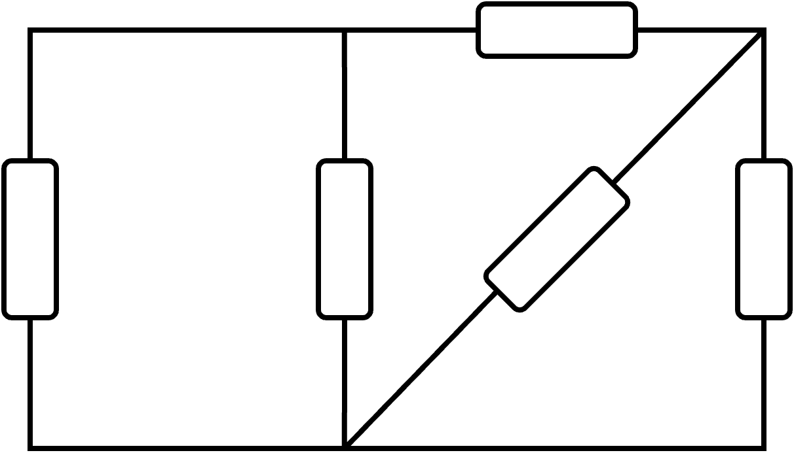
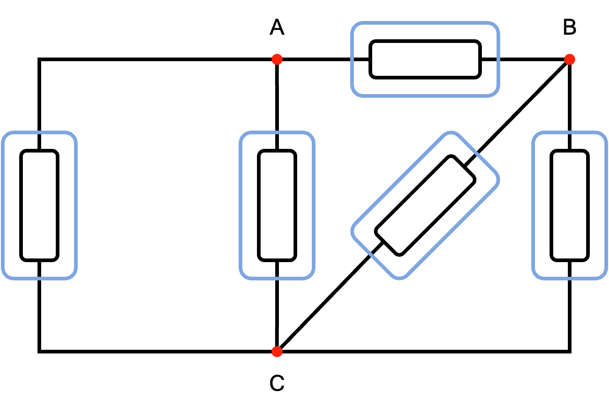
Orientando quindi il circuito si ottiene
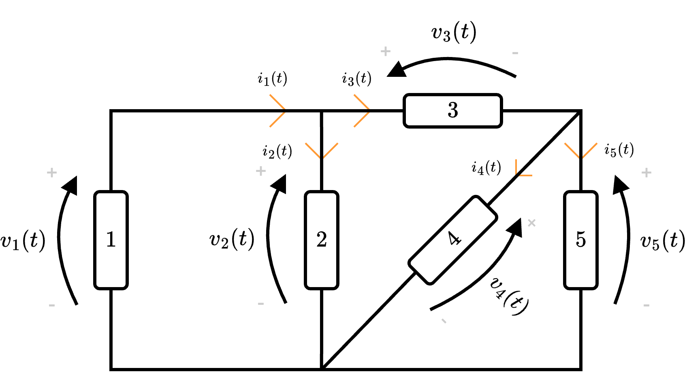
Applicando ora LKT
Definizione - Metodo di risoluzione algebrico (o di Tableu)
Una possibile strategia risolutiva è il metodo algebrico (o di Tableu) che consiste di diversi passaggi.
Dato un circuito, infatti, è necessario:
Dato un circuito, infatti, è necessario:
- identificare i nodi e i lati;
- orientare il circuito e identificare le \( 2 \cdot L\) incognite;
- scrivere le \( L\) equazioni costitutive dei lati;
- scegliere rispettivamente \( N - 1\) nodi a cui applicare \( LKC\) e \( L - N + 1\) anelli a cui applicare LKT per trovare le equazioni topologiche;
- ottenute le \( 2 \cdot L\) equazioni, risolvere il sistema.
Esempio - Risoluzione di un circuito utilizzando il metodo algebrico
Considerando il seguente circuito  risolverlo utilizzando il metodo di Tableu.
risolverlo utilizzando il metodo di Tableu.  e identifichiamo le incognite \( i_1\), \( i_2\), \( i_3\) e \( v_1\), \( v_2\), \( v_3\).
e identifichiamo le incognite \( i_1\), \( i_2\), \( i_3\) e \( v_1\), \( v_2\), \( v_3\).  assegniamo (utilizzando la convenzione dell'utilizzatore) la direzione della tensione alle resistenze. È quindi possibile dire che \[ \begin{array}{llcl} \text{Lato 1}: & v_1 & = & e_1 - v_{R1} \\ \text{Lato 2}: & v_2 & = & e_2 - v_{R2} \\ \text{Lato 3}: & v_3 & = & v_{R3} \end{array} \] È necessario tuttavia considerare che necessitiamo di queste equazioni in funzione delle incognite. Considerando ora la legge di Ohm, si ha che è possibile scrivere le tensioni sulle resistenze come \( v_{R} = R \cdot i\), ovvero \[ \begin{array}{llcl} \text{Lato 1}: & v_1 & = & e_1 - R_1 \cdot i_1 \\ \text{Lato 2}: & v_2 & = & e_2 - R_2 \cdot i_2 \\ \text{Lato 3}: & v_3 & = & R_3 \cdot i_3 \end{array} \]
assegniamo (utilizzando la convenzione dell'utilizzatore) la direzione della tensione alle resistenze. È quindi possibile dire che \[ \begin{array}{llcl} \text{Lato 1}: & v_1 & = & e_1 - v_{R1} \\ \text{Lato 2}: & v_2 & = & e_2 - v_{R2} \\ \text{Lato 3}: & v_3 & = & v_{R3} \end{array} \] È necessario tuttavia considerare che necessitiamo di queste equazioni in funzione delle incognite. Considerando ora la legge di Ohm, si ha che è possibile scrivere le tensioni sulle resistenze come \( v_{R} = R \cdot i\), ovvero \[ \begin{array}{llcl} \text{Lato 1}: & v_1 & = & e_1 - R_1 \cdot i_1 \\ \text{Lato 2}: & v_2 & = & e_2 - R_2 \cdot i_2 \\ \text{Lato 3}: & v_3 & = & R_3 \cdot i_3 \end{array} \]  Otteniamo quindi \[ \begin{array}{llcl} M_1: & v_1 - v_3 & = & 0 \\ M_2: & -v_2 + v_3 & = & 0 \end{array} \quad \implies \quad \begin{array}{llcl} M_1: & v_1 & = & v_3 \\ M_2: & v_2 & = & v_3 \end{array} \]
Otteniamo quindi \[ \begin{array}{llcl} M_1: & v_1 - v_3 & = & 0 \\ M_2: & -v_2 + v_3 & = & 0 \end{array} \quad \implies \quad \begin{array}{llcl} M_1: & v_1 & = & v_3 \\ M_2: & v_2 & = & v_3 \end{array} \]
Identificazione di nodi e lati
Per prima cosa, identifichiamo i nodi e i lati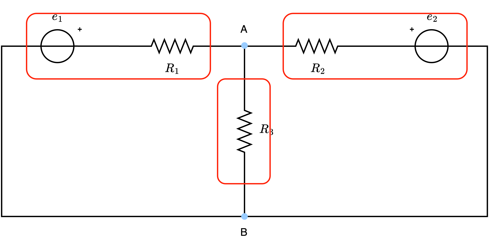
Orientamento circuito
Utilizzando anche le informazioni date dal generatore, orientiamo il circuitoEquazioni costitutive
Al fine di ottenere le equazioni costitutive di ogni latoEquazioni topologiche
Considerando ora i nodi individuati (che sono 2), occorre sceglierne \( N - 1\) (quindi 1) per applicare LKC: scegliamo quindi A e otteniamo \[ \begin{array}{llcl} A: & i_1 + i_2 - i_3 & = & 0 \end{array} \] e occorre individuare gli \( L - N + 1\) (\( 3 - 2 + 1 = 2\)) anelli a cui applicare LKT.Risoluzione sistema
Abbiamo quindi ottenuto le \( 2 \cdot L\) equazioni che è possibile porre a sistema, ottenendo \[ \left\{ \begin{array}{lrcl} \text{Lato 1}: & v_1 & = & e_1 - R_1 \cdot i_1 \\ \text{Lato 2}: & v_2 & = & e_2 - R_2 \cdot i_2 \\ \text{Lato 3}: & v_3 & = & R_3 \cdot i_3 \\ A: & i_1 + i_2 - i_3 & = & 0 \\ M_1: & v_1 & = & v_3 \\ M_2: & v_2 & = & v_3 \end{array} \right. \] Ora, considerando le equazioni \( M_1\) e \( M_2\) per cui \[ v_1 = v_2 = v_3 \] e la relazione "Lato 3" per cui \[ v_3 = R_3 \cdot i_3 \] è possibile riscrivere il sistema come \[ \left\{ \begin{array}{lcl} R_3 \cdot i_3 & = & e_1 - R_1 \cdot i_1 \\ R_3 \cdot i_3 & = & e_2 - R_2 \cdot i_2 \\ i_1 + i_2 - i_3 & = & 0 \end{array} \right. \] È ora sufficiente risolvere il sistema per ottenere i valori delle correnti \( i_1\), \( i_2\) e \( i_3\) e sostituire poi ad una qualsiasi delle equazioni costitutivve per ottenere il valore della tensione.Definizione - Metodo di risoluzione dei potenziali di nodo
Una possibile strategia risolutiva è il metodo dei potenziali di nodo che consiste di diversi passaggi.
Dato un circuito, infatti, è necessario:
Dato un circuito, infatti, è necessario:
- identificare i nodi e scegliere un nodo di riferimento (che sarà messo a "terra");
- identificare le tensioni degli altri nodi rispetto al riferimento;
- applicare LKC ai nodi di non riferimento;
- scrivere le equazioni LKC in funzione dei potenziali di nodo precedentemente identificati;
- risolvere il sistema ottenuto.
Esempio - Risoluzione di un circuito utilizzando il metodo dei potenziali di nodo - Esempio 1
Considerando il seguente circuito  risolverlo utilizzando il metodo dei potenziali di nodo. e scegliamo il nodo C come riferimento. e otteniamo le tensioni \( e_A\) ed \( e_B\). ottenendo quindi le equazioni: \[ \begin{array}{llcl} A: & i_1 - i_2 - i_3 - I & = & 0 \\ B: & I + i_3 - i_4 & = & 0 \end{array} \]
risolverlo utilizzando il metodo dei potenziali di nodo. e scegliamo il nodo C come riferimento. e otteniamo le tensioni \( e_A\) ed \( e_B\). ottenendo quindi le equazioni: \[ \begin{array}{llcl} A: & i_1 - i_2 - i_3 - I & = & 0 \\ B: & I + i_3 - i_4 & = & 0 \end{array} \]
Identificazione dei nodi e scelta del nodo di riferimento
Per prima cosa, identifichiamo i nodi del circuito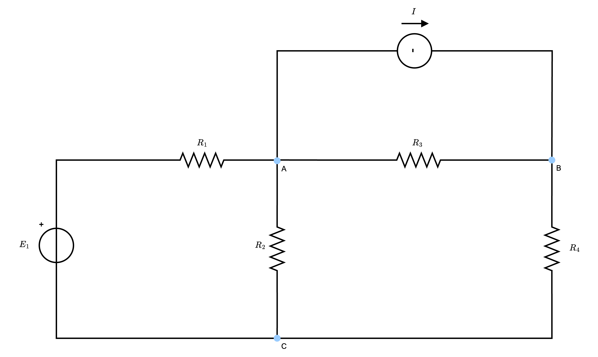
Identificazione delle tensioni rispetto al riferimento
Assegniamo quindi le tensioni agli altri nodi rispetto al nodo di riferimento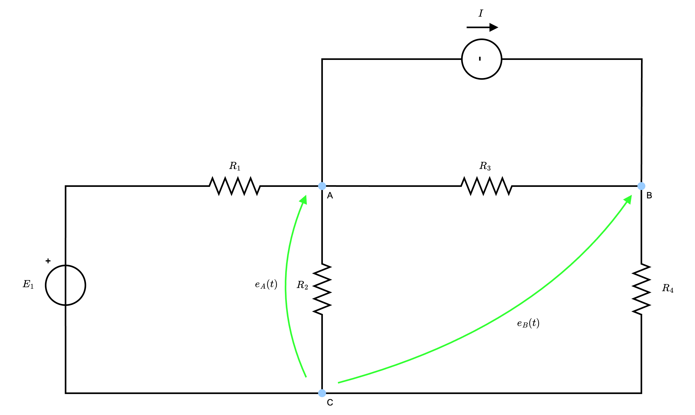
Applicazione di LKC ai nodi di non riferimento
Al fine di applicare LKC ai nodi di non riferimento, identifichiamo tutte le correnti del circuito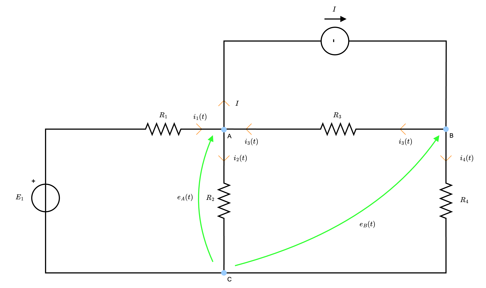
Scrivere le equazioni LKC in funzione dei potenziali di nodo
Dato ciò, al fine di riscrivere le equazioni LKC in funzione dei potenziali di nodo, occorre ragionare nel seguente modo:- la corrente \( i_1\), per la legge di Ohm, è dipendente dalla resistenza \( R_1\): è quindi possibile calcolarla come \[ i_1(t) = \frac{v_{R1}(t)}{R_1} \] Ora, per calcolare \( v_{R1}\) è possibile considerare la tensione ai poli di \( R_1\) e, considerando i segni assegnati dalla convenzione dell'utilizzatore sulla resistenza, si ha che nel polo positivo vi è tensione \( E_1\) (imposta dal generatore) mentre nel polo negativo vi è la tensione \( e_A\) (assegnata grazie al riferimento) per cui \[ i_1(t) = \frac{\overbrace{E_1 - e_A}^{v_{R1}(t)}}{R_1} \]

- la corrente \( i_2\), per la legge di Ohm, è dipendente dalla resistenza \( R_2\): è quindi possibile calcolarla come \[ i_2(t) = \frac{v_{R2}(t)}{R_2} \] Ora, per calcolare \( v_{R2}\) è possibile considerare la tensione ai poli di \( R_2\) e, considerando i segni assegnati dalla convenzione dell'utilizzatore sulla resistenza, si ha che nel polo positivo vi è tensione \( e_A\) (assegnata grazie al riferimento) mentre nel polo negativo vi è tensione nulla (in quanto è la stessa tensione del nodo di riferimento) per cui \[ i_2(t) = \frac{\overbrace{e_A}^{v_{R2}(t)}}{R_2} \]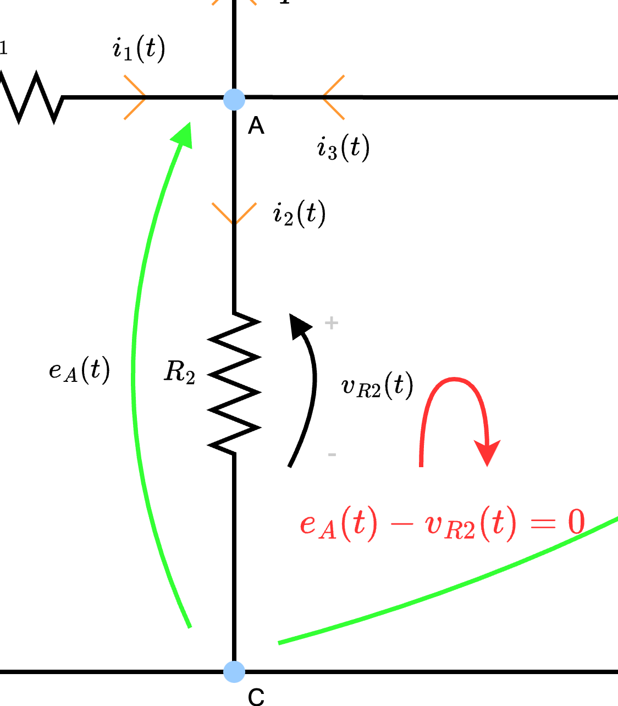
- la corrente \( i_3\), per la legge di Ohm, è dipendente dalla resistenza \( R_3\): è quindi possibile calcolarla come \[ i_3(t) = \frac{v_{R3}(t)}{R_3} \] Ora, per calcolare \( v_{R3}\) è possibile considerare la tensione ai poli di \( R_3\) e, considerando i segni assegnati dalla convenzione dell'utilizzatore sulla resistenza, si ha che nel polo positivo vi è tensione \( e_B\) (assegnata grazie al riferimento) mentre nel polo negativo vi è tensione \( e_A\) (assegnata grazie al riferimento) per cui \[ i_3(t) = \frac{\overbrace{e_B - e_A}^{v_{R3}(t)}}{R_3} \]

- la corrente \( i_4\), per la legge di Ohm, è dipendente dalla resistenza \( R_4\): è quindi possibile calcolarla come \[ i_4(t) = \frac{v_{R4}(t)}{R_4} \] Ora, per calcolare \( v_{R4}\) è possibile considerare la tensione ai poli di \( R_4\) e, considerando i segni assegnati dalla convenzione dell'utilizzatore sulla resistenza, si ha che nel polo positivo vi è tensione \( e_B\) (assegnata grazie al riferimento) mentre nel polo negativo vi è tensione nulla (in quanto è la stessa tensione del nodo di riferimento) per cui \[ i_4(t) = \frac{\overbrace{e_B}^{v_{R4}(t)}}{R_4} \]

Risoluzione sistema
È ora sufficiente risolvere il sistema lineare \[ \left\{ \begin{array}{lcl} \frac{e_1 - e_A}{R_1} - \frac{e_A}{R_2} - \frac{e_A - e_B}{R_3} - I & = & 0 \\ I + \frac{e_A - e_B}{R_3} - \frac{e_B}{R_4} & = & 0 \end{array} \right. \] per risolvere il circuito.Esempio - Risoluzione di un circuito utilizzando il metodo dei potenziali di nodo - Esempio 2
Considerando il seguente circuito risolverlo utilizzando il metodo dei potenziali di nodo.  e scegliamo il nodo B come riferimento.
e scegliamo il nodo B come riferimento.  e otteniamo la tensione \( e_A\). ottenendo quindi l'equazione: \[ A: \quad i_1 + i_2 - i_3 = 0 \]
e otteniamo la tensione \( e_A\). ottenendo quindi l'equazione: \[ A: \quad i_1 + i_2 - i_3 = 0 \]
Identificazione dei nodi e scelta del nodo di riferimento
Per prima cosa, identifichiamo i nodi del circuitoIdentificazione delle tensioni rispetto al riferimento
Assegniamo quindi le tensioni agli altri nodi rispetto al nodo di riferimentoApplicazione di LKC ai nodi di non riferimento
Al fine di applicare LKC al nodo di non riferimento, identifichiamo tutte le correnti del circuito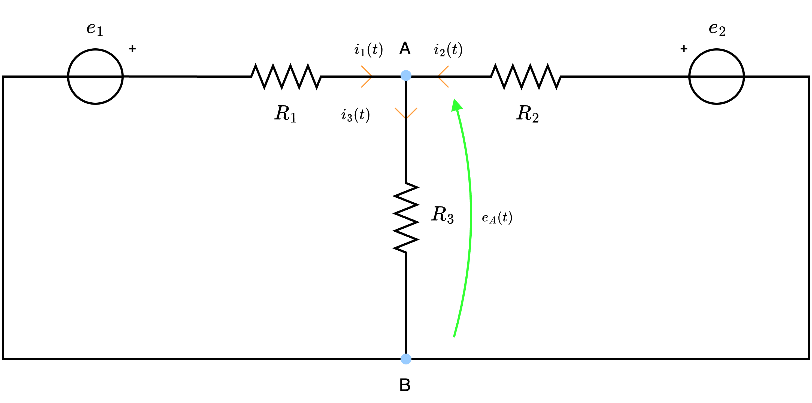
Scrivere le equazioni LKC in funzione dei potenziali di nodo
Dato ciò, al fine di riscrivere le equazioni LKC in funzione dei potenziali di nodo, occorre ragionare nel seguente modo:- la corrente \( i_1\), per la legge di Ohm, è dipendente dalla resistenza \( R_1\): è quindi possibile calcolarla come \[ i_1(t) = \frac{v_{R1}(t)}{R_1} \] Ora, per calcolare \( v_{R1}\) è possibile considerare la tensione ai poli di \( R_1\) e, considerando i segni assegnati dalla convenzione dell'utilizzatore sulla resistenza, si ha che nel polo positivo vi è tensione \( e_1\) (imposta dal generatore) mentre nel polo negativo vi è la tensione \( e_A\) (assegnata grazie al riferimento) per cui \[ i_1(t) = \frac{\overbrace{e_1 - e_A}^{v_{R1}(t)}}{R_1} \]

- la corrente \( i_2\), per la legge di Ohm, è dipendente dalla resistenza \( R_2\): è quindi possibile calcolarla come \[ i_2(t) = \frac{v_{R2}(t)}{R_2} \] Ora, per calcolare \( v_{R2}\) è possibile considerare la tensione ai poli di \( R_2\) e, considerando i segni assegnati dalla convenzione dell'utilizzatore sulla resistenza, si ha che nel polo positivo vi è tensione \( e_A\) (assegnata grazie al riferimento) mentre nel polo negativo vi è tensione \( e_2\) (imposta dal generatore) per cui \[ i_2(t) = \frac{\overbrace{e_A - e_2}^{v_{R2}(t)}}{R_2} \]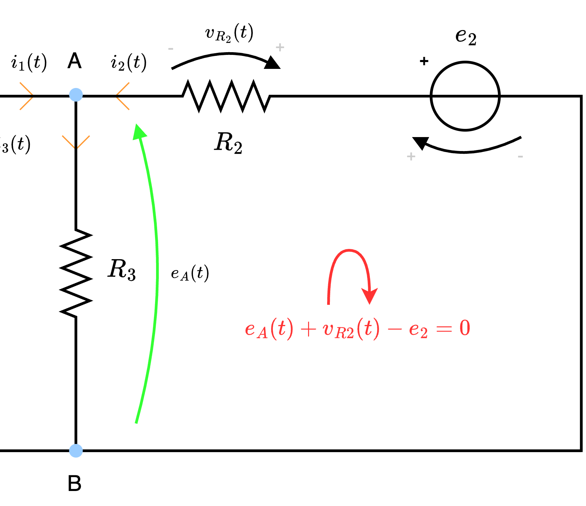
- la corrente \( i_3\), per la legge di Ohm, è dipendente dalla resistenza \( R_3\): è quindi possibile calcolarla come \[ i_3(t) = \frac{v_{R3}(t)}{R_3} \] Ora, per calcolare \( v_{R3}\) è possibile considerare la tensione ai poli di \( R_3\) e, considerando i segni assegnati dalla convenzione dell'utilizzatore sulla resistenza, si ha che nel polo positivo vi è tensione \( e_A\) (assegnata grazie al riferimento) mentre nel polo negativo vi è tensione nulla (in quanto è la stessa tensione del nodo di riferimento) per cui \[ i_3(t) = \frac{\overbrace{e_A}^{v_{R3}(t)}}{R_3} \]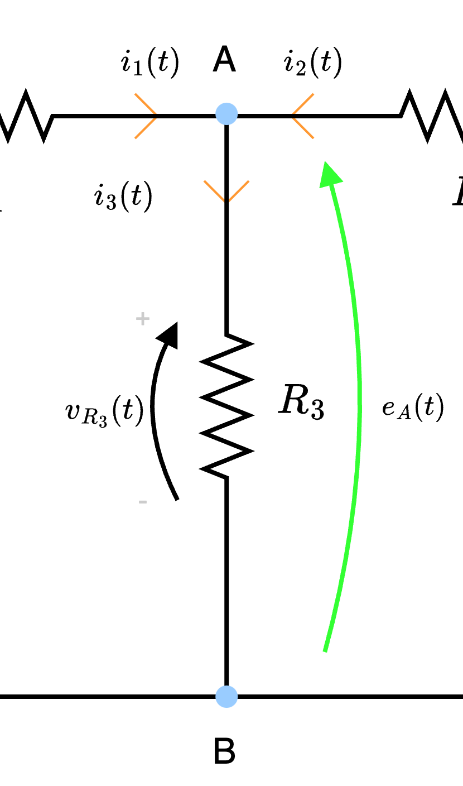